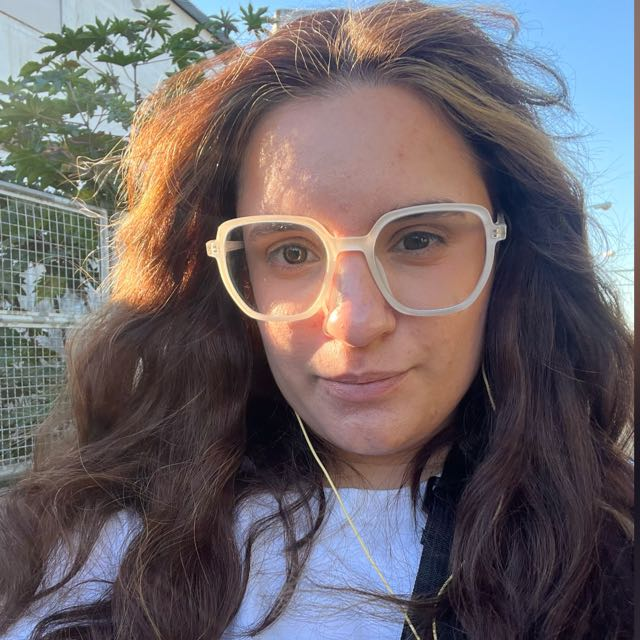

Sobre mí
Diseño, comunicación audiovisual y curiosidad por explorar nuevas formas de crear.

Soy Florencia León, Técnica en Artes Multimediales por la Universidad Nacional de las Artes. Tengo 28 años y trabajo como diseñadora, ilustradora y editora de video.
Actualmente trabajo de manera freelance creando contenido para Lexicon Education, Lexicon Go y Quinta Las Marlenes. Además, formo parte del equipo de Creativos de Cristo para Todos, colaborando en comunicación y marketing.
Aunque comencé enfocándome en la edición de video, hoy también realizo grabación y producción audiovisual. Para trabajar utilizo una DJI Osmo Pocket 4, un micrófono DJI y dos micrófonos corbateros Soul.
Mis herramientas principales son Photoshop, Illustrator y CapCut. También manejo Canva, Premiere Pro y Figma.
Con qué trabajo
Photoshop · Illustrator · CapCut · Canva · Premiere Pro · Figma · After Effects (básico) · HTML · CSS · JavaScript
¿Hablamos?
Estoy en búsqueda de oportunidades laborales y colaboraciones creativas.
leonflorenciapaula@gmail.com ↗+54 11 6615 9367Instagram @flowerr.designs ↗